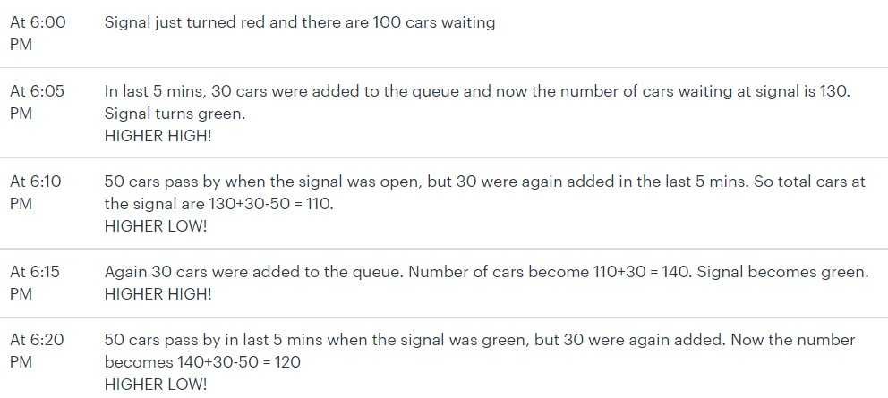

Your best friend
You might have seen technical analysts analyzing charts on various business news channels and
telling that a particular stock is in uptrend/downtrend. When we say a stock is in uptrend it means
that we expect stock price to move upwards in near future. Similarly, when we say a stock is in
downtrend it means we expect stock price to move downwards in near future. You would have
noticed that prices rarely move in a straight line. Even if the stock price has moved up, over the
last year, there will be days or months when it would have moved down, compared to the previous
close. So how do we define a trend? Technical Analysis says that if the stock price is moving up
and making higher highs and higher lows, it is in uptrend. Let’s understand this through an
example.
Suppose you decide to analyze traffic situation at a nearby signal. You know that signal becomes
green in every 5 mins and remains open for the next 5 mins. At 6pm you observe that there are
100 cars waiting at the signal which just turned red. The signal will become green at 6:05 pm and
will again become red at 6:10 pm. You observe that in every 5 mins 30 cars arrive at the signal and
add up to the queue. In the 5 mins, when signal is open, 50 cars pass by. Let’s note down your
observations at various points of time

Let’s say you observe that around 7 pm, it starts getting less congested and only 25 cars are
added to the queue in every 5 mins, instead of 30 cars. Previously 60 cars were getting added to
the queue in every 10 mins and only 50 were moving out, as the signal only opens for 5 mins in a
10 min window. After 7 pm the situation has changed. Now, only 50 cars are getting added in
every 10 mins and we know that same number of cars will move out, in 5 mins when the signal is
open. So now the traffic has become stagnate. It’s neither increasing nor decreasing, as 25 cars
are added in every 5 mins but in next 5 mins, 50 move out. This situation is depicted by the
middle part of the chart below.
After 7:30 pm, you observe that only 20 cars are getting added to the queue. Now the pattern will
make lower highs and lower lows. We recommend trying this scenario yourself. Traffic situation
will improve because we know that only 40 cars are added to the queue in every 10 mins and 50
cars are moving out. We can clearly say that no of cars at the signal are in downtrend and now we
expect them to decrease with time.
If we join all the highs, it’s called resistance. If we join all the lows, it’s called support. Keep
reading, as we go in details of trend, support and resistance in our next post.
Investing in FDs thinking you will earn 8% returns?
In our previous post, we discussed how exchanges facilitate buying and selling of shares between
market participants and the role of brokers in the process. In this article let’s discuss how orders
to buy/sell shares are placed on an exchange.
Let’s assume you decide to buy 1 kg of tomatoes from the nearby vegetable market at not more
than Rs.10/kg. You go to the market and see that there are five vendors, all selling tomatoes at Rs
15/Kg. You start negotiating with each one of them and realize that there can be two outcomes:
Outcome 1: Just like you other customers are also demanding lower price. Seeing this vendors will
start reducing the price, as nobody is willing to buy tomatoes at Rs 15/kg. It might happen that
the price comes down to Rs 10/kg and after buying 1 kg tomato you go home happily,
Outcome 2: Unlike you, others are willing to pay the price of Rs.15/kg demanded by vendors. As
vendors will be able to clear their stock at higher price, prices will never come down. In this case
you won’t be able to buy tomatoes at Rs.10/kg and will return empty handed.
In the above example, you are the buyer, tomato vendors are the sellers and tomatoes are the
commodities (underlying). Similarly on the exchange, there are many buyers and sellers and the
underlying could be anything: stock, bond etc. The entire trading process takes place on an
electronic system where buy and sell orders are matched. Just like in our example, suppose now
you want to buy 1 share of a company A at Rs 100, currently trading at a price of Rs 108. Lets us
discuss the different types of orders that can be placed to execute the above order.
Types of orders
Limit Order: You can key in an order into your computer to buy 1 share of company A at Rs.100.
Just as in our earlier example there are 2 possibilities. If lot of people are demanding shares of
company A, at Rs.100 and nobody is willing to pay the current market price of Rs.108, prices will
automatically come down to match demand and you might be able to buy at Rs.100 or even lower
than that. However if other buyers are comfortable paying Rs.108, then prices will not come down
to your desired level and you will not be able to buy the shares. In a limit order, the order will get
executed at your desired price or at a better price – i.e. at the limit price or a lower price in case of
a buy order, and conversely, at the limit price or a higher price in case of a sell order. This order
type is advantageous when the investor wants to buy/sell at a particular price and does not mind
waiting for that price.
Market Order: In this case you key in an order to buy/sell the shares immediately at the current
market price. Your priority is speed of order execution and you do not care about the direction of
price movement. In this case you might end up buying at a higher price or selling at a lower price,
as price might increase/decrease by the time order is executed.
Stop Loss order: This is a risk averse investors favorite. Suppose after buying the shares at Rs.100
you are now concerned that the price might fall further and do not want to make a huge loss. So
you can enter a stop loss order at a price lower than your purchase price. Let’s assume you do not
want to lose more than Rs.5 on your purchase, a stop loss order can be put in at Rs.95. If the price
starts to trend down and hits Rs.95 shares will be sold and your loss will be minimised to Rs.5.
Duration order: This order variety allows you to specify the time till when the order you placed
stays open. Let’s suppose you enter a limit order and make it “Good for the day”. In this case, if
the order is not executed by the end of the day then it will automatically get cancelled. However if
you place “Good until cancelled” order, then the order will remain open/active until the price
comes down to your desired level and you are able to buy the share.